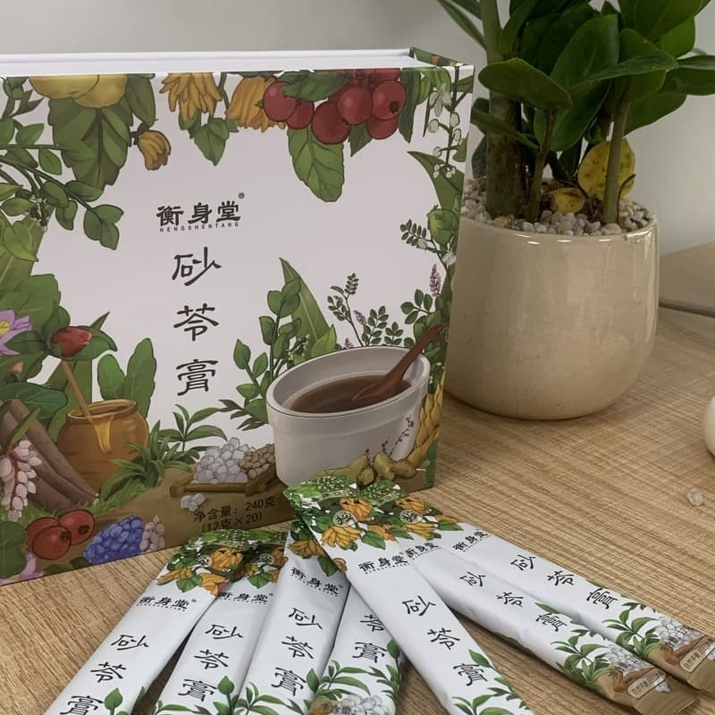

膏类 · 经典爆款 · 健脾祛湿
砂苓膏
健脾养胃，祛湿排浊
核心成分
16 味药食同源材料，无添加剂、无防腐剂
- 茯苓
- 薏苡仁
- 山楂
- 陈皮
- 白扁豆
- 山药
- 甘草
- 佛手
- 砂仁
- 香橼
- 生姜
- 荷叶
- 蜂蜜
- 麦芽
- 鸡内金
- 决明子
价格与规格
| 购买规格 | 价格 |
|---|---|
| 单盒 | 178 元 |
| 小周期 3 盒 | 468 元 |
| 大周期 9 盒 | 1399 元 |
官方购买渠道 · 认准衡身堂正品
下单前认准品牌标识与客服「林药师客服 · 衡小蜜」，避免买到仿冒产品。
- 抖音：抖音搜索「衡身堂」官方店铺；五指毛桃茯苓陈皮茶有商品直达链接
- 微信小店：微信内搜索「衡身堂」官方小店
- 京东：京东搜索「衡身堂」官方店铺
- 拼多多：拼多多搜索「衡身堂」官方店铺
- 小红书：小红书搜索「衡身堂」官方账号
产品特点
- 16 味药食同源材料，安全放心
- 古法八繁工序熬制，高倍浓缩
- 独立条装，撕开即食，方便携带
- 口感温润清甜，无浓重中药味
适用人群
- 3 岁以上全家日常保健（孕妇除外）
- 脾胃偏弱、湿气重人群
- 小儿积食、挑食、不长肉的家长关注人群
食用方法
- 直接吃或温水冲服，早上空腹吃效果较好
- 也可以涂在面包上当早餐
- 每次半条，一天一次，建议饭后吃
工艺与匠心
砂苓膏浓缩提炼古法传承，遵守古法八道工序：选材地道、秘法炮制、深度清洁、慢浸长泡、武火熬汁、文火煎稠、滤清提髓、秘稠收膏，每个环节精益求精，方能熬出上品膏滋。
核心卖点
- 古法八繁工序：选、制、洗、泡、煎、秘、滤、收，八道工序精益求精
- 用户好评真实反馈：舌苔干净、排便顺畅、身体轻松
- 经典产品，市场验证，全家适用（孕妇除外）
温馨提示
- 本品含有薏苡仁，孕妇不宜食用
- 糖尿病患者慎用
- 感冒期间、在服用其他药物期间，不建议食用
常见问题
Q：砂苓膏小孩能吃吗？
A：儿童建议咨询专业人士后适量食用。每次半条，一天一次，建议饭后吃。
Q：孕妇为什么不能吃？
A：含有薏苡仁和山楂，孕妇慎用。
Q：吃多久有感觉？
A：一般一个小周期（3 盒）就能感觉到舌苔干净、排便顺畅、身体轻松。
Q：怎么吃比较好？
A：直接吃或者温水冲服，早上空腹吃效果最好。也可以涂在面包上当早餐。
Q：有副作用吗？
A：药食同源材料，性质温和。刚开始吃有些人可能会排便增多或排气多，是排湿的正常反应，坚持几天就会好转。
Q：糖尿病人能吃吗？
A：砂苓膏含有蜂蜜，糖尿病患者慎用，建议咨询医生。
Q：保质期多久？怎么保存？
A：保质期 18 个月，阴凉干燥处保存，避免阳光直射。
用户案例：佛山顺德·白领李女士（28 岁）
膏体质地很细腻，口感温润清甜，没有浓重的中药味，孩子和老人都能接受。独立小条包装特别省心，居家、出门随身带都很方便，撕开就能吃。已经成为家里常备的日常膳食小补给，吃完会持续回购。